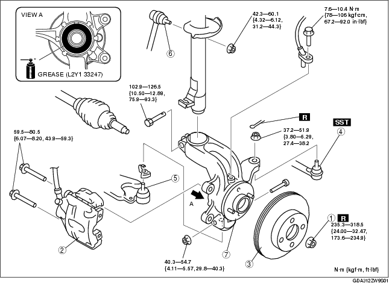

1. Remove the ABS wheel-speed sensor. (See FRONT ABS WHEEL-SPEED SENSOR REMOVAL/INSTALLATION.)
2. Remove in the order indicated in the table.
3. Install in the reverse order of removal.
4. After installation, inspect the front wheel alignment.
(See FRONT WHEEL ALIGNMENT.)

.
|
1
|
Locknut
|
|
2
|
Brake caliper component
|
|
3
|
Disc plate
|
|
4
|
Tie-rod end
|
|
5
|
Front lower arm ball joint
|
|
6
|
Stabilizer control link (upper side)
|
|
7
|
Wheel hub, steering knuckle component
|
1. Remove the brake caliper component, and suspend it using wire.
1. Separate the shock absorber and wheel hub/steering knuckle component by tapping the steering knuckle.
1. Apply grease (L2Y1 33247) to the wheel bearing inner race and drive shaft contact surface (Area A in figure).
2. Install the wheel hub, steering knuckle component.